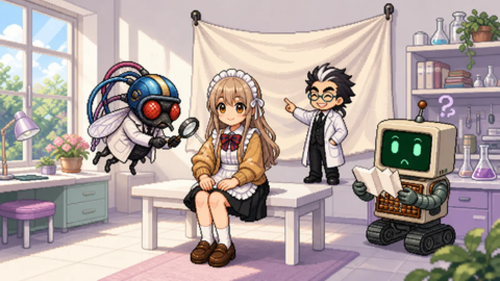
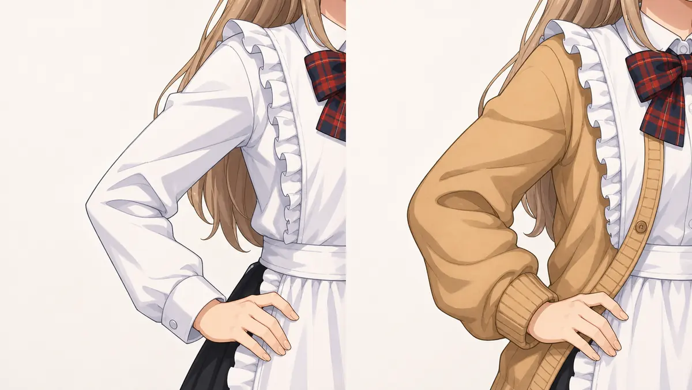
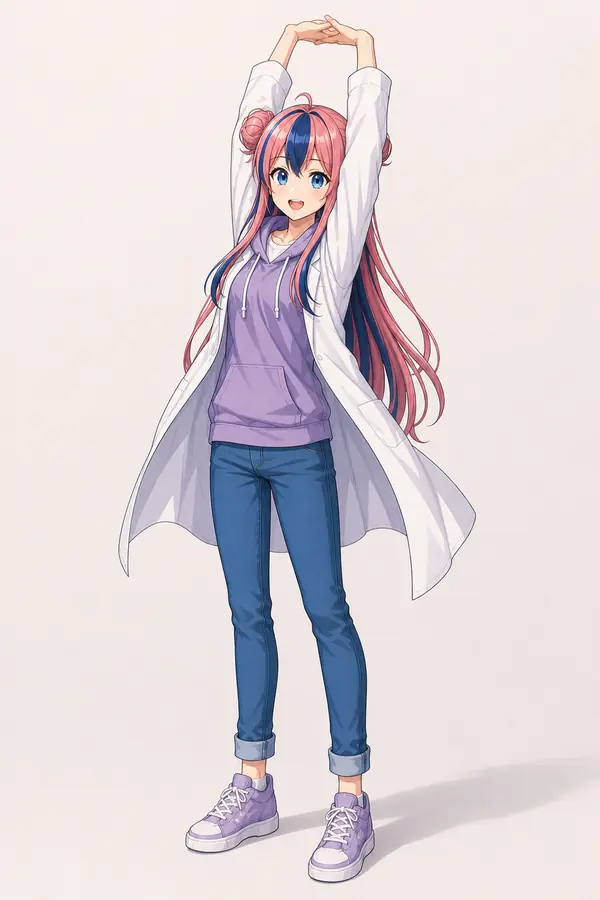
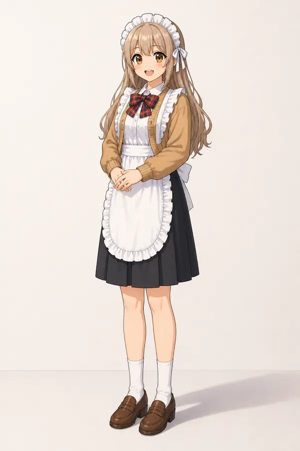

오늘의 과제

박사천 한 장을 고리에 걸었다. 주름은 어디서 시작될까?

주판봇천 전체에 골고루요! 많을수록 진짜 같거든요!

초파리 연구원고리에서 시작해서 아래로 퍼지는 것 같은데?

모아제 카디건도 팔꿈치만 쭈글쭈글하고 등은 매끈해요. 이유가 있겠죠?

세 번째 모델은 카디건을 입은 모아입니다. 주판봇은 지그재그 무늬를 잔뜩 넣고, 초파리는 천이 어디에 붙어 있는지부터 찾습니다.
그림 실력·코드·수식을 몰라도 됩니다. 실험을 눌러 보며 따라오세요.
천을 붙잡는 접점과 그 사이의 힘, 그리고 중력이 주름의 모양을 정합니다
커튼을 양쪽으로 모으면 세로 주름이 촘촘해집니다(모임 주름). 침대 시트를 네 귀퉁이에서 당기면 대각선 주름이 생깁니다(당김 주름).
VFX의 천 시뮬레이션도 똑같이 '고정점(접점)'을 먼저 정하고 중력과 힘을 줍니다. 손 그림의 주름도 이 순서로 생각합니다.


한 점: 접점에서 아래로 퍼지는 처짐 주름(川 모양)이 생깁니다.
두 점: 두 접점 사이로 당김 주름이 생기고, 중력 때문에 가운데가 처집니다. 높이가 다르면 높은 쪽으로 기울어진 주름이 됩니다.
양쪽에서 모으기: 가운데에 세로 모임 주름이 촘촘히 생깁니다. 작업에서는 주름을 그리기 전에 접점부터 점으로 찍어 둡니다.
AI 그림의 치마에 주름이 위아래로 고르게 퍼져 있고 허리(접점)와 상관이 없습니다. 문제일까요?
치마 주름은 허리 접점에서 아래로 처지며 퍼져야 합니다. 접점과 이어지지 않는 주름은 무늬처럼 보이는 오류입니다(6부 f4).
관절·겨드랑이·허리·밑단 — 몸이 접히거나 천이 걸리는 곳을 먼저 찾습니다
셔츠를 입고 팔짱을 끼면 팔꿈치 안쪽과 겨드랑이에만 주름이 몰립니다.
의상 설정표에는 '주름이 생기는 자리'를 따로 표시합니다. 애니메이션에서는 동작마다 이 자리의 주름만 바꿔 그려 작업량을 줄입니다.

어깨(걸림 → 처짐), 팔꿈치 안쪽(모임), 겨드랑이(당김+모임), 허리(모임), 무릎 위(당김·처짐), 소맷부리·밑단(고임)입니다.
같은 옷이라도 자세가 바뀌면 접히는 관절이 바뀌어 주름 자리도 옮겨 갑니다.
작업에서는 이 6곳만 먼저 그리고, 나머지는 매끈하게 두어도 자연스럽습니다.
AI 그림에서 모아의 앞치마 한가운데에 큰 주름 다발이 있고, 팔꿈치는 매끈합니다. 어느 쪽이 의심스럽나요?
앞치마 한가운데는 접히는 곳도 걸리는 곳도 아닙니다. 굽힌 팔꿈치가 매끈한 것도 의심스럽습니다. 두 곳 모두 원리와 맞지 않습니다.
같은 주름도 선이 부드럽게 흐르면 부드러운 천, 각지게 꺾이면 빳빳한 천으로 보입니다
새 와이셔츠는 팔꿈치 주름이 각지고, 오래 입은 니트는 둥글고 처집니다.
작법서에서는 흐름을 '플로우', 꺾임을 '텐션'이라 부르기도 합니다. VFX 천 시뮬레이션의 '굽힘 강성' 값이 같은 역할을 합니다(5단계).

흐름 높음 + 꺾임 낮음 → 부드럽고 얇은 니트·실크, 흐름 낮음 + 꺾임 높음 → 빳빳한 셔츠·종이, 둘 다 낮으면 늘어진 무거운 천입니다.
무게는 '처짐의 크기'로 따로 표현합니다. 무거운 천일수록 접점 사이가 크게 처집니다.
작업에서는 한 옷 안에서 흐름·꺾임을 일정하게 유지해야 같은 천으로 보입니다.

AI 그림에서 모아의 니트 카디건 주름이 종이처럼 각져 있습니다. 프롬프트에서 무엇을 바꿀까요?
소재를 분명히 적습니다: 'soft chunky knit, rounded flowing folds'. 반대로 셔츠는 'crisp cotton, sharp folds'처럼 흐름·꺾임을 말로 지시합니다(5부).
관절을 굽히면 안쪽 천이 남아 모이고, 바깥쪽 천은 당겨집니다

학교 수학으로 보면 — 부채꼴 호의 길이 l = rθ — 반지름이 다른 두 호의 길이 차이입니다.
| 식 조각 | 뜻 |
|---|---|
| 소매 반지름 | 팔 가운데 줄에서 소매 안쪽까지 |
| 굽힌 각 | 팔을 편 상태에서 굽힌 만큼, 라디안 = 도 × π ÷ 180 |
| 남는 길이 | 안쪽에서 접혀 들어가야 하는 천 |

헐렁한 점퍼는 팔을 조금만 굽혀도 주름이 크게 지고, 몸에 붙는 운동복은 많이 굽혀도 주름이 작습니다.
애니메이션 원화에서는 동작의 처음·끝 그림에서 주름 개수를 이 비율로 맞춰야 움직임이 자연스럽게 이어집니다.
90°, 반지름 5cm이면 안쪽에 약 7.9cm가 남아 주름 2~3개가 생깁니다.
반지름을 8cm로 늘리면(헐렁한 소매) 같은 90°에서 약 12.6cm, 주름 4개쯤이 됩니다.
작업에서는 많이 굽힐수록 안쪽 주름을 늘리고, 바깥쪽에는 팔꿈치에서 퍼지는 당김 주름 한두 개를 넣습니다.

AI 그림에서 팔을 쭉 편 팔꿈치 안쪽에 주름이 다섯 개 있습니다. 맞을까요?
편 팔(0°)은 남는 길이가 0에 가깝습니다. 주름이 많다면 헐렁한 소매가 아래로 처진 것이거나 원리와 맞지 않는 주름입니다.
천을 점과 용수철로 만들어 중력과 충돌을 계산하면 주름이 저절로 생깁니다
놀이공원 낙하산 놀이에서 여러 명이 가장자리를 잡고 흔들면, 손 위치에 따라 천에 물결이 생깁니다.
영화·게임의 망토·치마는 이 계산으로 움직입니다. 손 그림과의 차이: 컴퓨터는 정확하지만 '보기 좋은 주름'을 골라 주지는 않아 아티스트가 다듬습니다.
뻣뻣함이 낮으면 잘고 둥근 주름, 높으면 굵고 각진 주름이 됩니다(3단계의 흐름·꺾임).
무게가 크면 접점 사이가 더 처지고 주름이 아래로 길게 늘어집니다.
작업에서는 시뮬레이션 결과를 참고 그림으로 쓰고, 손으로 큰 주름만 골라 정리합니다.
AI 영상에서 치마가 바람이 없는데도 계속 출렁입니다. 무엇을 의심할까요?
천 시뮬레이션이라면 힘(바람·움직임)이 없으면 처짐 상태로 가라앉아야 합니다. 이유 없는 움직임은 생성 모델이 만든 흔들림일 수 있습니다.
같은 모아, 같은 자세에서 옷 주름 문장만 바꿉니다. ① 바람 없는 날은 접점과 중력, ② 바람 부는 날은 한 방향 흐름을 적습니다.
주름이 시작되는 곳(어깨·허리·팔꿈치)과 처지는 방향을 적었습니다. 첨부: 모아 설정 시트

Full body character illustration, vertical 2:3. Character (match the attached reference sheet exactly): Moa, a gentle cheerful maid intern, a young adult woman in her early twenties, long ash-beige hair with soft wavy ends and neat bangs, white frilled maid headband with a thin white ribbon over the LEFT ear, big round amber-brown eyes, white shirt with a red and navy plaid bow tie, camel knit cardigan with ribbed cuffs, white frilled apron, black knee-length skirt, white socks, brown loafers. Pose: standing still in calm air, three-quarter view, both elbows bent with the hands loosely clasped in front of the waist, warm smile. Fabric: the soft knit cardigan hangs from the shoulders; rounded compression folds gather inside both bent elbows; the ribbed cuffs bunch slightly at the wrists; the skirt and apron hang straight down from the waist by gravity with soft vertical drape folds; no folds in places where nothing pulls or bends. Lighting: soft daylight from the upper left, cast shadow on the floor toward the lower right. High-quality anime illustration, clean lineart, two-tone cel shading with soft highlights. Plain off-white background. No text, no letters, no logos, no watermark, no revealing clothing, not resembling any famous anime character, five fingers on each hand.
천 문장만 바꿨습니다. 머리·리본·치맛단이 모두 같은 쪽으로 흐르게 적었습니다. 첨부: 모아 설정 시트
Full body character illustration, vertical 2:3. Character (match the attached reference sheet exactly): Moa, a gentle cheerful maid intern, a young adult woman in her early twenties, long ash-beige hair with soft wavy ends and neat bangs, white frilled maid headband with a thin white ribbon over the LEFT ear, big round amber-brown eyes, white shirt with a red and navy plaid bow tie, camel knit cardigan with ribbed cuffs, white frilled apron, black knee-length skirt, white socks, brown loafers. Pose: standing three-quarter view, both elbows bent with the hands loosely clasped in front of the waist, warm smile, a few leaves in the air. Fabric: a steady gentle breeze from the left. The hair, the headband ribbon, the apron ties, the skirt hem and the apron edge all flow to the right in the same direction with S-shaped wave edges; on the left side the fabric presses lightly against the legs; the skirt stays knee length and modest. Lighting: soft daylight from the upper left, cast shadow on the ground toward the lower right. High-quality anime illustration, clean lineart, two-tone cel shading with soft highlights. Bright plain outdoor background with a light sky. No text, no letters, no logos, no watermark, no revealing clothing, not resembling any famous anime character, five fingers on each hand.
| 항목 | 주판봇 | 초파리 |
|---|---|---|
| 닮음(외형 고정값) | 8 | 8 |
| 입체감(주름 그림자) | 6 | 7 |
| 자연스러움(접점·중력) | 3 | 9 |
| 합계 | 17 | 24 |


점수는 이야기 속 예시입니다. 실제 그림을 평가한 값이 아닙니다.
| 주제 | 한 줄 | 작업에서는 |
|---|---|---|
| 세 종류 | 당김·모임·처짐 | 접점부터 찍기 |
| 자리 | 관절·걸림·고임 6곳 | 나머지는 매끈하게 |
| 소재감 | 흐름(S자)과 꺾임(모서리) | 한 옷 안에서 일정하게 |
| 움직임 | 남는 길이 = 반지름 × 각 | 굽힐수록 주름 늘리기 |
| 천 시뮬레이션 | 점과 용수철 + 중력 | 참고 그림으로 쓰고 다듬기 |

이 페이지에 나온 개념·방법·비유·쓰임을 모았습니다. 검색하고, "설명 보러 가기"로 본문에 돌아갑니다.
지식 색인을 출처와 함께 파일로 내려받습니다. 서지 관리는 BibTeX·RIS, 온톨로지 편집은 Turtle, 그래프 도구는 CSV, 여러 페이지 합치기는 kg.json입니다.